0x00 背景
这是一个 AI 横行的时代，但很多人对 AI 的认知仍停留在「打开 ChatGPT 一问一答聊天」这个层面。
大家都知道 AI 很强，也隐约感觉它应该能参与工作、学习和生活里的具体场景，但真要落到自己的电脑、自己的流程、自己的数据上，却往往不知道第一步该从哪里开始。
与此同时，各大媒体平台每天都在抛出一堆新名词：Claude、OpenCode、Agent、Skill、MCP、FastGPT、LLM、RAG、小龙虾……它们究竟是什么？能解决什么问题？彼此之间是什么关系？如果只靠自媒体或短视频来理解，最后大概率只会得到一锅夹生饭 —— 名词听过不少，原理一窍不通。
其实本质概念不多，大多数新概念只是某一层概念上的迭代。
本文将抛弃那些花里胡哨的东西，从零开始，把搭建 AI 环境这件事讲清楚，让不管是文科还是理科背景的同学，都能在自己的电脑上跑起来一套实用的 AI 工具链。
本文不是 OpenClaw/小龙虾 部署教学。在我看来，它只是一个被媒体包装出来的概念，一个不成熟、不安全、不可信的半成品。AI 发展太快，媒体又擅长放大个体被时代淘汰的焦虑，于是这只恰好被风口吹起来的「毒虾」就有了流量。但等你真正理解并搭建出自己的 AI 环境后，会发现所谓的小龙虾并没有什么神秘之处 —— 它不过是用这些工具临时拼出来的、粗制滥造的产物罢了。
0x10 先旨声明
从客观的技术现状来看，在大部分 AI 应用场景里，海外模型、工具链和生态成熟度仍然领先于国内。
这不是立场站队，而是工程事实：谁的模型能力更强、工具更稳定、生态更完整，谁就更值得学习使用。
因此，本文后续介绍的 AI 工具、模型服务和相关文档，很多都需要能够科学上网才能获取或使用。建议先参考《trojan 睁眼看世界教程》或通过其他方式，确保你的电脑可以访问境外网站。否则很多步骤会卡在下载、登录、鉴权或 API 调用上，后面的内容也就无从谈起。
我一直认为技术无国界，但技术优势从来不会自动流向落后者。别人掌握更好的工具、更强的模型和更完整的生态时，封锁与壁垒就是很自然的结果。与其被某些假爱国口嗨的自媒体道德绑架/遮蔽认知，不如脚踏实地去学、去用、去追赶 —— 「师夷长技以制夷」，才是今时今日的唯一出路。
0x20 基础环境安装
在开始部署 AI 环境之前，需要先安装两个基础环境：
0x30 AI 环境演进
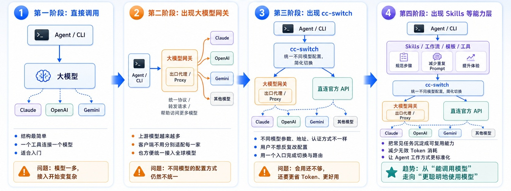
乍看之下，这几年 AI 生态日益繁杂，但 AI 环境的本质，就一条从「本地入口」到「上游模型」的调用链。
截至目前，这个调用链大体经历了 4 个演进阶段：
| 阶段 | 架构变化 | 原因 |
|---|---|---|
| 一 | 本地 Agent 直连大模型 | 用户使用 AI 的最简单结构，链路短、理解成本低 |
| 二 | 引入大模型网关 | 上游模型越来越多，需要统一 Key、计费、模型名和接口协议 |
| 三 | 引入 cc-switch | 不同 Agent 的配置方式不同，频繁切换模型和 Provider 很麻烦 |
| 四 | 引入 Skill | 重复任务需要沉淀成可复用能力，减少随机输出和 Token 浪费 |
这四个阶段没有严格的时间线，而是 AI 从简单到复杂、从能用到好用的自然演进路径。
下文会按这个演进顺序展开：
- 先安装 Agent，让 AI 能在本地跑起来
- 再引入大模型网关，解决多模型接入问题
- 然后处理模型切换和配置管理
- 最后再谈 Skill，把重复任务沉淀成稳定能力
0x40 AI Agent
0x41 为什么是 Agent
在以 ChatGPT 为代表的网页对话式 AI 出现之后不久，大家很快就意识到一个问题：仅能网页对话的交互方式极大地限制了 AI 的真正能力。
网页对话交互适合问答和写作，但不适合深度参与本地工作流。而我们需要的是真正的工程化使用、让 AI 能读取本地项目上下文、调用本地工具，甚至直接修改代码和文件。
最早的本地调用方式是直接使用 OpenAI 这类供应商提供的 API 接口。大模型 API 的出现，意味着 AI 开始从「网页产品」进入「工程组件」阶段，可以被程序调用、集成和自动化。
但 API 本身并不适合普通用户。它要求用户理解接口、鉴权、请求参数、上下文管理和工具调用，大部分人还没开始用 AI 就被拦在门外了。
于是 Agent 出现了。
所谓的 Agent 可以理解为「用户（你）和大模型之间的操作入口」。它不仅是一个聊天窗口，而且是一个能读取上下文、调用工具、修改文件、执行命令，并把结果反馈给模型继续推理的本地执行器。
此时，只要本地安装一个 AI Agent，AI 就可以直接通过 Agent 参与本地工作。它不再只是回答问题，而是开始具备「动手能力」。
于是，为了抢占用户入口，各大模型供应商都先后推出自己的专用 Agent：
| 大模型 | 供应商 | Agent | 擅长处理场景 |
|---|---|---|---|
| Claude | Anthropic | Claude Code | 编码 |
| Gemini | Gemini CLI | 视觉效果（图像等） | |
| GPT | OpenAI | Codex | 通用 |
| … | … | … | … |
为了便于初学者理解，本文从广义上认为
Agent = Claude Code / Gemini CLI / Codex / ...。实际上他们都是一个整合了Agent + Skill + MCP的 Harness 工程 … —— 详见文末的 FAQ
0x42 安装 Agent
前面提到的 Claude Code、Gemini CLI、Codex 等 Agent，都深度绑定了自家的模型生态，好处是毋须配置开箱即用。
如果只是体验某一家模型，这当然没问题。但真实工作场景往往更复杂：编码场景用 Claude，图像处理场景用 Gemini，通用场景用 GPT。而为了切换模型而切换 Agent，不仅操作成本高，还要不断重新交代项目背景和上下文，就有点低效了。
有没有一种 Agent，既能保留工作区和会话上下文，又能按场景自由切换不同模型？
有的，OpenCode 就是一个比较合适的选择。它是开源 Agent，不强制绑定某一家模型生态，也更适合作为个人 AI 环境的统一入口。
首先去官网下载并安装桌面版 OpenCode Desktop：
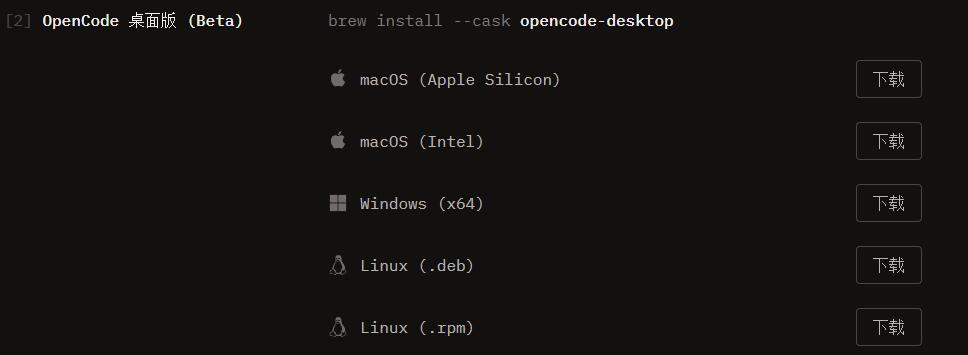
装完后运行，你会得到这样的操作界面：
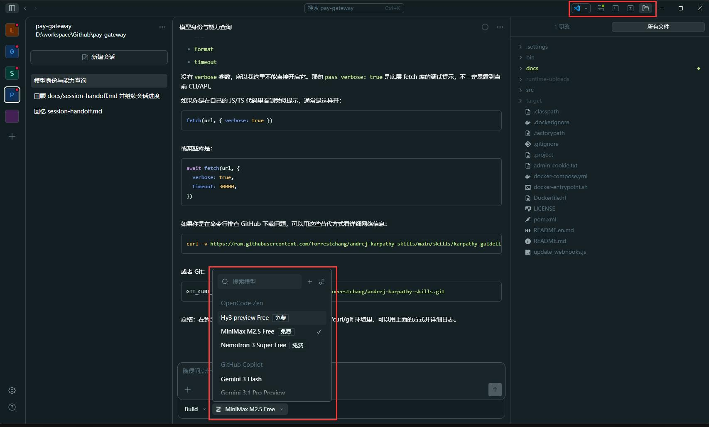
界面布局主要有三栏（如果没有就点一下右上角布局切换按钮）：
- 左栏：选择工作区目录（Agent 默认可访问的本地目录），以及基于该工作区的会话列表
- 右栏：当前工作区的文件目录树
- 中栏：与 Agent 对话的操作窗口，底部可以切换 AI 大模型，这也是后续最常用的核心操作区
0x43 购买 AI 大模型
Agent 只是入口，现在希望 OpenCode 可以调用 DeepSeek 大模型，则需要在 DeepSeek 开放平台购买 API 调用额度。
首先注册并登录 DeepSeek 开放平台，充值 10 元即可：
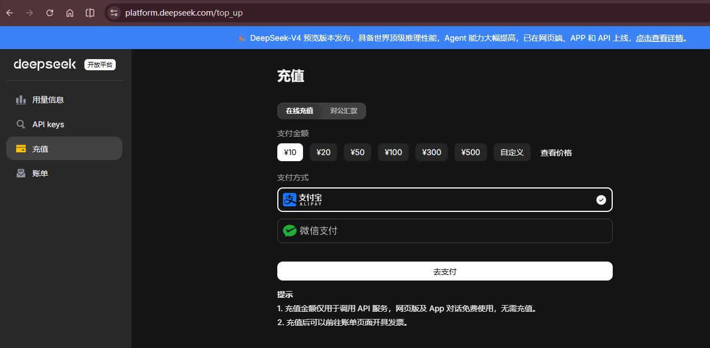
然后进入 API Keys 页面，创建一个 API Key 并保存好备用。
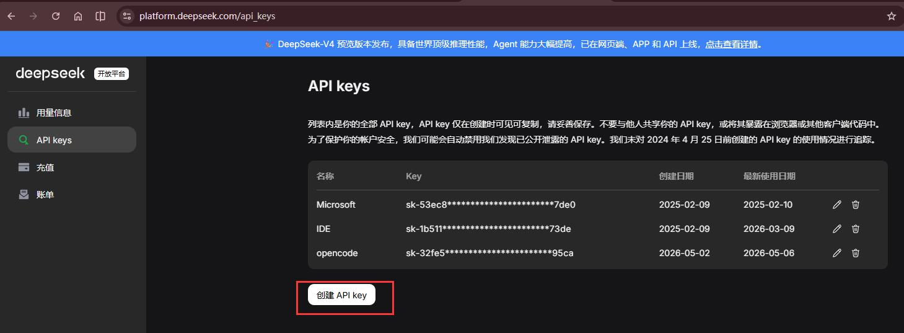
至此，你就拥有了调用 DeepSeek 大模型的使用资格。
注意 API Key 就是调用大模型的钥匙，不要泄露给任何人。别人拿到你的 Key，就可以直接消耗你的余额。
也别再纠结本地私有化部署大模型了。现在几乎所有好用的大模型都要付费，差别只是按量付费还是包月付费。私有化部署看似免费，实际性价比往往最低 … —— 详见文末 FAQ
0x44 配置 AI 大模型
购买模型额度之后，下一步就是把 DeepSeek 配置到 OpenCode 里。
回到 OpenCode，依次点击左下角的 设置 -> 供应商/Provider -> 查看更多供应商 -> 搜索 DeepSeek -> 输入前面创建的 API Key：
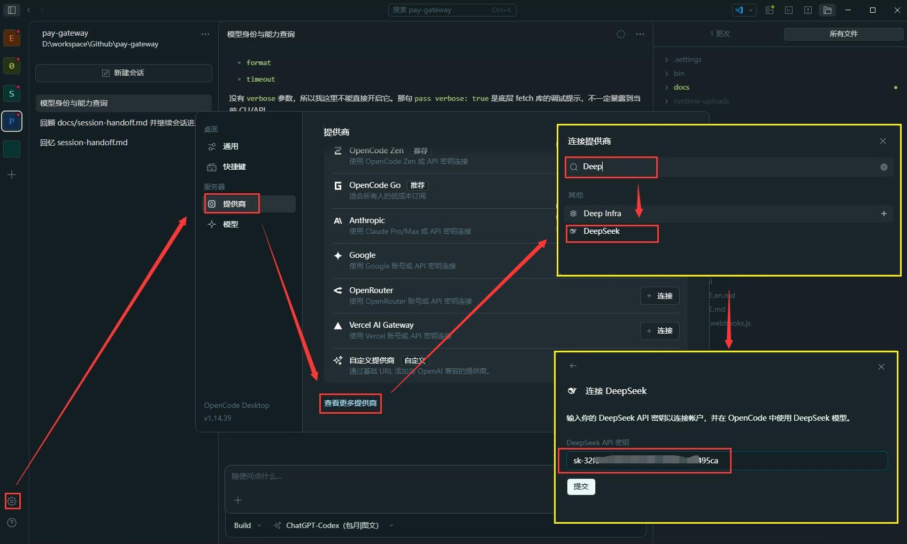
保存后，OpenCode 会通过这个 API Key 自动拉取 DeepSeek 支持的模型列表。
接着继续配置模型显示列表：依次点击 设置 -> 模型/Model -> 搜索 DeepSeek，筛选出 DeepSeek 模型。
点击模型后面的开关，可以控制该模型是否显示在界面底部的模型切换列表中：
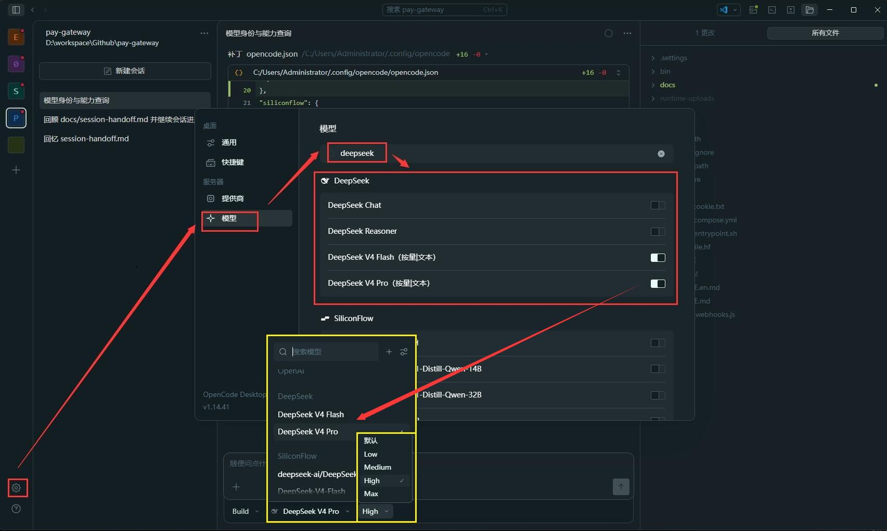
不难注意到，DeepSeek 模型后面还有 Low、Medium、High、Max 这样的选项。它们对应的是推理强度 variant：
- Low：几乎不推理，直接输出，速度最快
- Medium：适度推理，平衡速度与质量
- High：深度推理，适合复杂逻辑
- Max：最大推理预算，最慢但思考最充分
并不是所有模型都支持配置 variant，但对于支持的模型来说，它会直接影响推理质量、响应速度和费用。
一般情况下，推理强度越大，输出质量越高，但消耗的 输出 token 也越多，费用自然也更高。所以到底选择 Low、Medium 还是 Max，本质是在质量、速度、费用之间做取舍。
日常简单问答用 Low 或 Medium 就够了；涉及复杂代码分析、方案设计、长上下文推理时，再考虑 High 或 Max。
0x45 token 如何计费
这里插入一个所有人都关心的问题：AI 到底是怎么收费的？
在 DeepSeek 官方的 产品定价 页面，可以看到当前支持模型的计费信息：
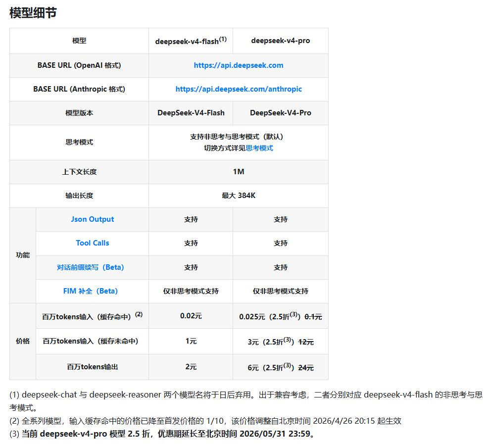
以 deepseek-v4-flash 模型为例，价格表里通常会出现三类费用：
| 计费项 | 含义 | 单价 |
|---|---|---|
| 输入 token（缓存命中） | 重复上下文被缓存复用 | 0.02 元 / 百万 tokens |
| 输入 token（缓存未命中） | 新输入的上下文内容 | 1 元 / 百万 tokens |
| 输出 token | 模型生成的回答内容，包含推理消耗 | 2 元 / 百万 tokens |
最坏情况下，假设输入完全没有命中缓存，那么每百万 tokens 的成本大约就是：
输入 1 元 + 输出 2 元 = 3 元 / 百万 tokens这里面隐含了两个影响费用的关键变量：
- 推理强度
variant（烧钱）：影响 AI 在生成最终回答之前的内部思考深度，这部分消耗通常会计入输出 tokens - 缓存命中
Cached（省钱）：同一个会话中，历史上下文、固定提示词、长文档内容如果被复用，就可能命中缓存，从而降低输入成本
那 每百万 tokens 又是什么意思？
token 是模型处理文本的基本单位，可以理解为一段文字被拆分后的最小片段。
具体拆分方式取决于模型的分词算法（Tokenizer），例如：
- 英文：1 个 token 大致接近 1 个单词或标点，例如
Hello, world!可能被拆成["Hello", ",", "world", "!"] - 中文：1 个 token 大致接近 1-2 个汉字或词语，例如
你好，世界！可能被拆成["你", "好", "，", "世界", "！"]
为了更形象地理解，可以粗略认为：100 万 tokens 大约相当于 50-80 万字中文文本，差不多是一本长篇小说的体量：
- 《三国演义》约 64 万字
- 《红楼梦》约 73 万字
- 《西游记》约 82 万字
- 《水浒传》约 96 万字
也就是说，在最坏计费情况下，你和 AI 合作处理一本《西游记》体量的文本，成本大概也就几块钱。
0x46 安装 CLI
OpenCode Desktop 已经足够普通用户使用了，但如果你是开发人员，最好再安装 CLI 版本。
原因很简单：桌面版适合可视化操作，CLI 更适合嵌入真实工作流。比如在项目目录里直接启动 Agent、配合终端执行命令、让 AI 读写当前工程文件，这些都是 CLI 更顺手。
最简单的安装方式，是直接让 OpenCode Desktop 帮你安装。在对话框里输入：
帮我安装 opencode 命令行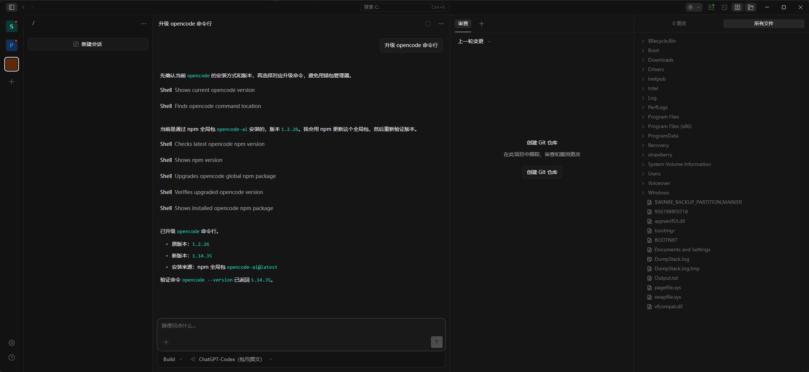
因为前面已经安装过 Node.js，所以 Desktop 本质上只是帮我们执行下面这条命令：
npm i -g opencode-ai安装完成后，打开系统终端并输入 opencode，即可进入 OpenCode CLI：
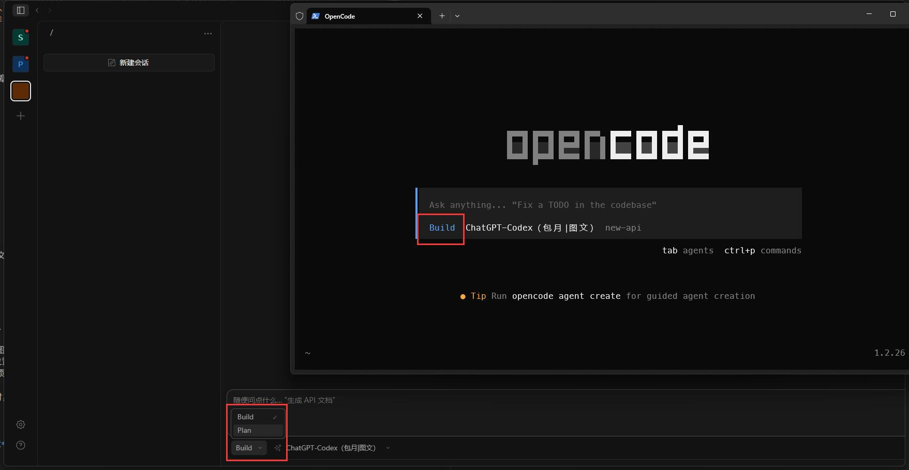
CLI 的基本操作是：
- 直接输入任意内容：和大模型对话
- 输入
/models：切换大模型 - 连续按下
Tab：切换 Agent 角色（默认只有 Plan / Build） - 输入
/exit：退出 CLI
Agent 角色默认只有 Plan / Build，可以粗略理解为任务拆解时的自动分工：Plan 负责分析和规划，Build 负责执行和修改。后续也可以通过安装 oh-my-openagent 扩展更多角色 … —— 详见文末 FAQ
0x47 配置 OpenCode
OpenCode CLI 的全局配置文件路径如下（如果不存在就手动创建）：
- 绝对路径：
%USERPROFILE%/.config/opencode/opencode.json - 相对路径：
~/.config/opencode/opencode.json
Desktop 和 CLI 共用同一份全局配置
最简单的 DeepSeek 配置如下：
{
"$schema": "https://opencode.ai/config.json",
"provider": {
"deepseek": {
"npm": "@ai-sdk/openai-compatible",
"options": {
"baseURL": "https://api.deepseek.com/v1",
"apiKey": "sk-deepseek-api-key-xxx",
"setCacheKey": true
},
"models": {
"deepseek-v4-pro": {
"name": "DeepSeek V4 Pro（按量|文本）"
},
"deepseek-v4-flash": {
"name": "DeepSeek V4 Flash（按量|文本）"
}
}
}
}
}其中几个关键配置项的含义如下：
| 配置项 | 说明 |
|---|---|
deepseek |
自定义 Provider 名称，后续用它标识 DeepSeek |
npm |
使用 OpenAI 兼容协议适配器 |
baseURL |
DeepSeek API 地址：https://api.deepseek.com/v1 |
apiKey |
在 DeepSeek 创建的 Key，例如 sk-deepseek-api-key-xxx |
models |
暴露给 OpenCode 使用的模型列表 |
setCacheKey |
开启缓存 Key，有助于复用上下文缓存 |
这些配置信息都可以在模型供应商的官网找到（如 DeepSeek 在 产品定价 页面）。尤其注意不同平台的模型名经常会变，配置时应以官方文档为准。
初学者可能现在看不懂某些配置项，譬如 @ai-sdk/openai-compatible 是什么意思？但是没关系，先按照这个配置格式复制使用即可，后面我们介绍 cc-switch 时会详细说明。
配置好 opencode.json 后，重启 CLI / Desktop，OpenCode 就会自动重载配置。
到目前为止，我们已经完成了 第一阶段：安装本地 Agent，并让它直接调用大模型。
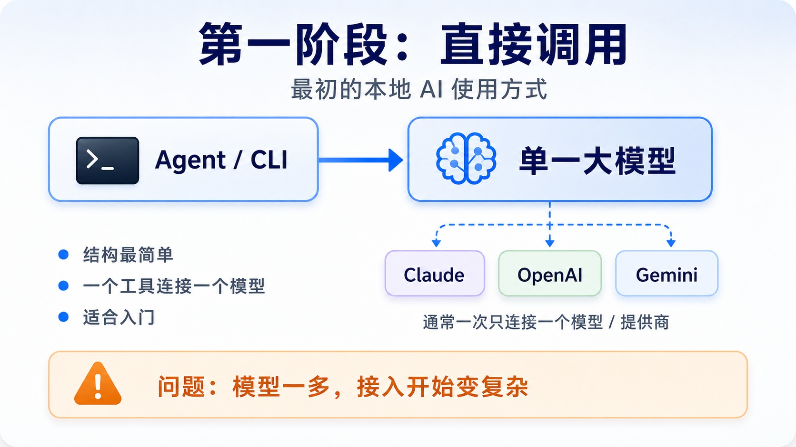
现在可以回到 Desktop，随便打开一个本地目录，然后选择 DeepSeek 大模型，让 AI 试着读取文件、修改文件、执行命令，感受一下 Agent 和网页聊天机器人的区别：它不是只会回答问题，而是已经开始具备本地操作能力。
0x50 大模型网关 new-api
前面介绍的是最简单的一条链路： Agent（OpenCode） 直连某个大模型供应商。
这条链路足以覆盖日常编码、写作、资料整理和简单自动化任务。但随着使用深入，你很快会发现单一模型不够用：有些任务 DeepSeek 性价比高，有些复杂编码更适合 Claude，有些通用问答或资料处理可能更适合 GPT / Gemini。
于是你开始购买多个模型服务，新的问题也随之出现：
- 不同模型供应商的接口协议不同，Agent 需要分别适配
- 模型名、版本、价格散落在各个平台，难以统一管理
- 每个供应商都有自己的 API Key，配置和泄露风险都会变高
有没有办法屏蔽这些差异，把所有模型统一接入 OpenCode，然后按需切换？
有的，大模型网关就是为了解决这个问题而存在的。
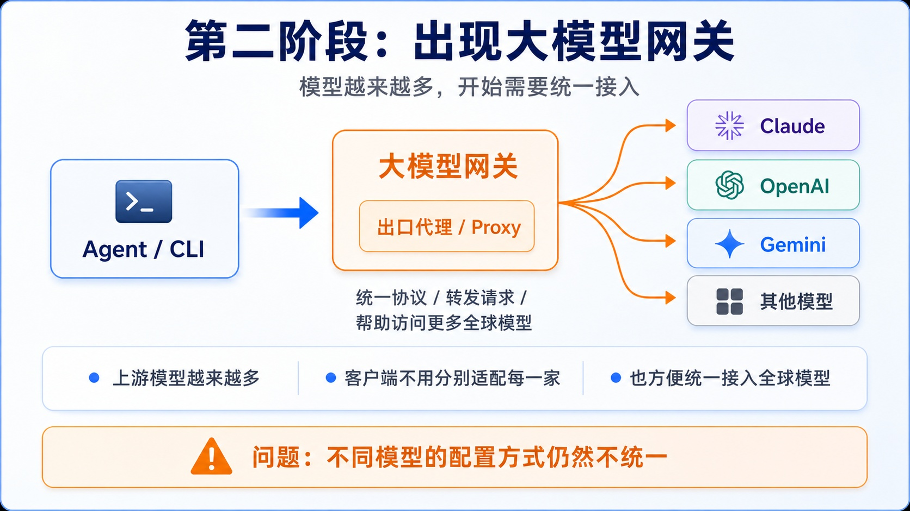
大模型网关位于 Agent 和模型供应商之间。对外，它提供统一的 OpenAI 兼容接口；对内，它根据模型名称把请求路由到不同的上游供应商。
使用网关之后，OpenCode 只需要配置一个 Base URL 和一个网关 API Key。至于请求最终转发给 DeepSeek、OpenAI、Claude 还是 Gemini，交给网关处理即可。
0x51 部署
这里推荐使用 Docker 部署开源大模型网关 new-api。
先到官网下载并安装 Docker Desktop。
由于后面会在 new-api 中配置海外模型供应商，因此需要先处理 Docker 容器的网络代理。否则 new-api 在容器里启动了，但容器内部访问不了上游模型 API，最后还是会调用失败。
代理需在 Docker Desktop 设置。
依次选择 Settings -> Resources -> Proxies：
Docker Desktop proxy：主机代理，主要用于访问 DockerHub 镜像Containers proxy：建议选择Same as host proxy，让容器网络出口复用主机代理，也就是让后面部署的 new-api 容器可以正常访问境外模型服务
版本太旧的 Docker Desktop 可能没有
Containers proxy配置项，建议直接升级。不要在这里硬刚网络问题，没意义。

然后到 GitHub 拉取 new-api 工程到本地，按项目文档使用 Docker 部署即可：
https://github.com/Calcium-Ion/new-api不知道 Docker 怎么部署 new-api？你的 OpenCode 呢？问 AI 啦。既然都在搭 AI 环境了，这种细节就别再手搓了。
new-api 启动后，即可访问控制台（首次访问需要设置管理员账号和密码）：
http://localhost:3000/console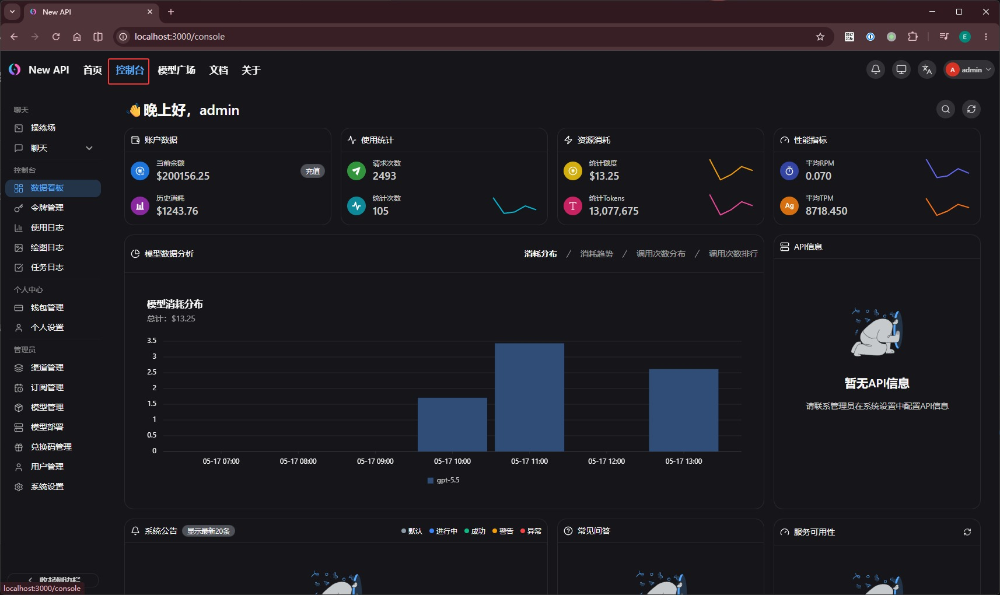
0x52 配置
new-api 里的核心概念有三个：渠道、模型、令牌。
| 概念 | 作用 |
|---|---|
| 渠道 | 上游模型供应商，例如 DeepSeek / OpenAI / Claude |
| 模型 | 对外暴露给 Agent 调用的模型名称 |
| 令牌 | new-api 自己签发的 API Key，供 OpenCode 等 Agent 调用 |
第一步，进入「渠道管理」，添加上游真正的大模型服务供应商。
添加渠道时，只需要先配置带 * 的必填项：
- 类型：从下拉框选择你购买的模型供应商
- 名称：自定义名称，能看懂这是哪个渠道即可
- 密钥：在模型供应商处创建的 API Key，后续由 new-api 代替 Agent 去调用上游模型
- 模型：填写常用模型名称即可，不要贪多；模型名以供应商官方文档为准
- 代理地址：如果前面已经配置了
Containers proxy，这里可以留空
如果没有配置
Containers proxy，这里就需要填写容器可达的代理地址。注意不能填127.0.0.1，因为这是容器自己的回环地址，不是宿主机地址。你需要把本地代理暴露到局域网，再填写类似http://192.168.x.x:端口的地址。
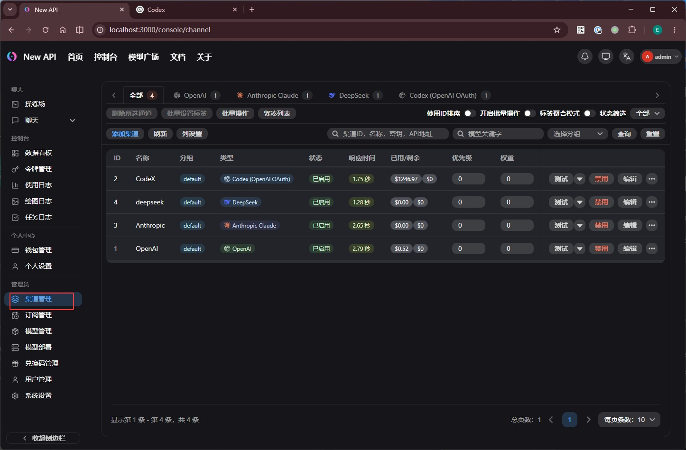
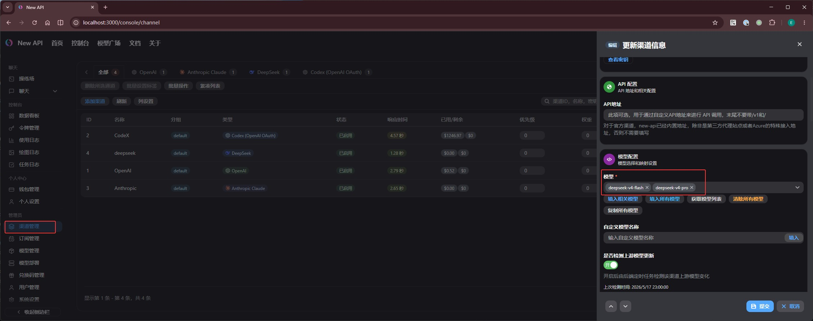
第二步，进入「模型管理」，添加同名模型。
注意，「渠道管理」里填写的 模型 只是告诉 new-api 这个渠道支持哪些上游模型；它还不能直接被 Agent 调用。你还需要在「模型管理」里一一添加同名模型。
这里 名称匹配类型 选择 精确名称匹配。配置正确后，已绑定渠道 会自动关联对应渠道。之后 Agent 调用该模型名时，new-api 就会自动走这个渠道转发请求：
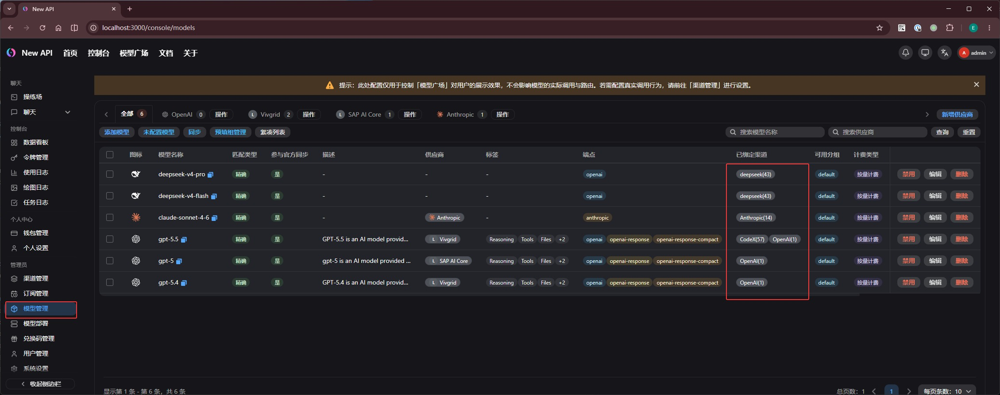
第三步，配置模型价格。
进入「系统设置」 -> 分组与模型定价设置 -> 价格设置，依次添加同名模型，并根据模型供应商的报价设置 输入价格，最后点击 应用更改：
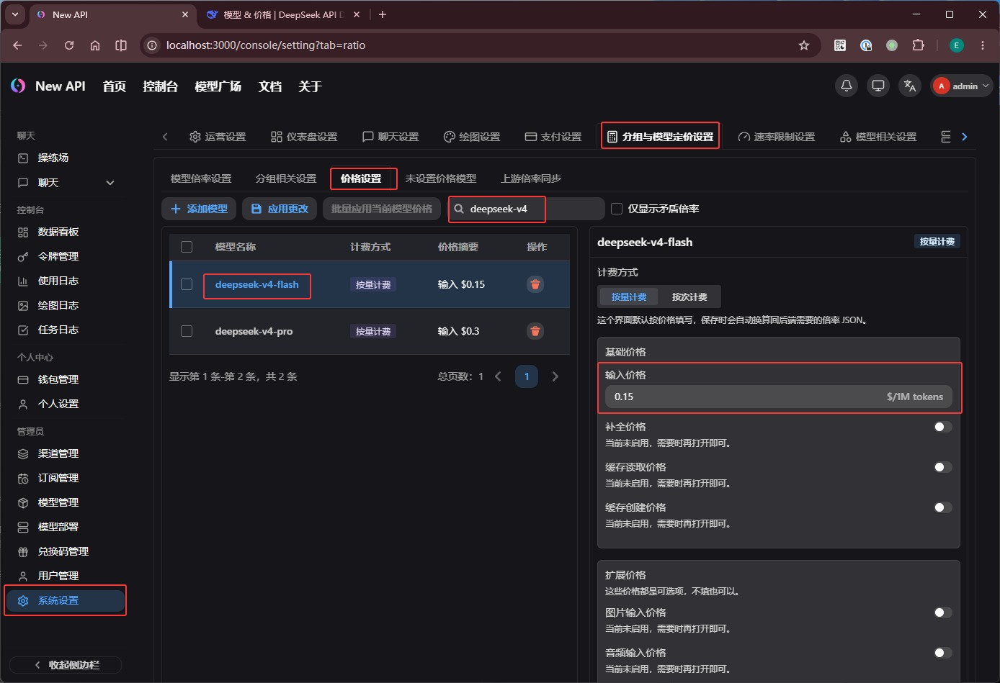
第四步，在「令牌管理」添加一个令牌，这就是 new-api 签发给 OpenCode 使用的 API Key：
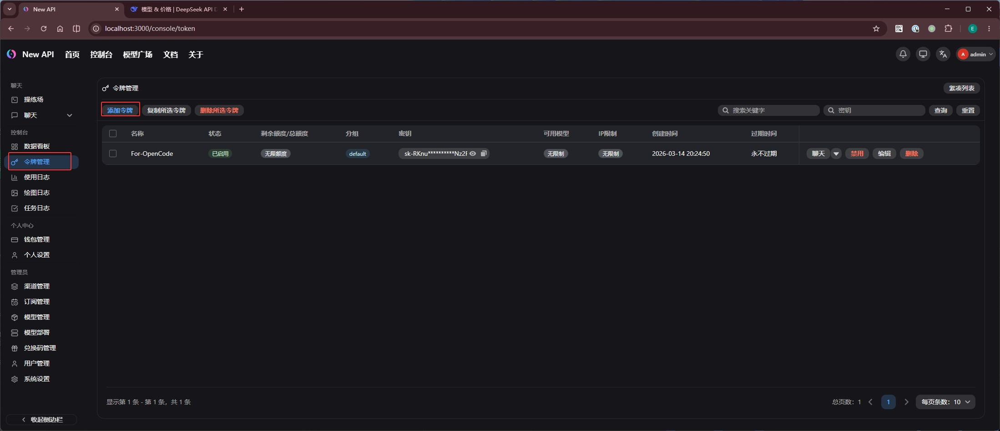
到这里，new-api 的核心配置就完成了。
之后只要 OpenCode 使用 new-api 令牌调用某个模型，new-api 就会根据模型名找到绑定渠道，再由该渠道代理调用真正的大模型供应商。
0x53 对接
现在编辑 OpenCode 的配置文件 opencode.json。
前面在 new-api 里配置了多个上游渠道，这里也对应配置多组 provider ：
{
"$schema": "https://opencode.ai/config.json",
"provider": {
"deepseek": {
"npm": "@ai-sdk/openai-compatible",
"options": {
"baseURL": "http://localhost:3000/v1",
"apiKey": "sk-new-api-key-xxx",
"setCacheKey": true
},
"models": {
"deepseek-v4-pro": {
"name": "DeepSeek V4 Pro（按量|文本）"
},
"deepseek-v4-flash": {
"name": "DeepSeek V4 Flash（按量|文本）"
}
}
},
"openai": {
"npm": "@ai-sdk/openai-compatible",
"options": {
"baseURL": "http://localhost:3000/v1",
"apiKey": "sk-new-api-key-xxx",
"setCacheKey": true
},
"models": {
"gpt-5.4": {
"name": "GPT 5.4（按量|文本）"
}
}
},
"codex": {
"npm": "@ai-sdk/openai",
"options": {
"baseURL": "http://localhost:3000/v1",
"apiKey": "sk-new-api-key-xxx",
"setCacheKey": true
},
"models": {
"gpt-5.5": {
"name": "GPT 5.5（包月|文本）"
}
}
},
"anthropic": {
"npm": "@ai-sdk/anthropic",
"options": {
"baseURL": "http://localhost:3000/v1",
"apiKey": "sk-new-api-key-xxx",
"setCacheKey": true
},
"models": {
"claude-sonnet-4-6": {
"name": "Claude Sonnet 4.6（按量|文本）"
}
}
}
}
}细心的同学应该已经发现：这 4 组配置的 baseURL 和 apiKey 完全一样，都是 new-api 的接入地址和令牌。
区别只在 provider 名称、适配器 npm 和暴露出来的 models 不同。
换句话说，现在 OpenCode 已经不需要分别直连 DeepSeek、OpenAI、Claude 这些上游供应商了，而是统一连接 new-api，由 new-api 再转发到真正的大模型服务：
0x60 cc-switch
上一章已经把大模型网关搭起来了，但新的问题也随之出现：opencode.json 变得越来越复杂。
单独配置一个 DeepSeek 还好，一旦接入 DeepSeek、OpenAI、Claude、Gemini 等多个渠道，每个渠道又有不同的 provider、npm、baseURL、apiKey、models，非技术出身的同学想必越来越难理解复杂的 json 结构。
cc-switch 的出现就是为了解决这个问题的。
它可以把不同 Agent 的模型配置可视化管理起来，通过界面生成和维护 opencode.json，不需要每次都手写一大段 JSON。
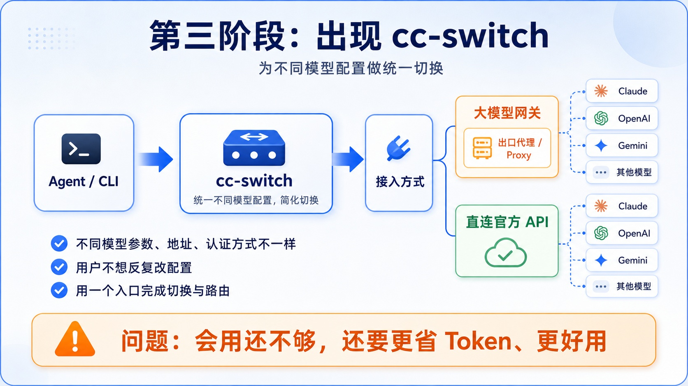
0x61 安装
进入 cc-switch 的 GitHub 发布页，下载对应系统版本并安装即可：
https://github.com/farion1231/cc-switch/releases初始状态下，cc-switch 顶部会显示一排支持的 Agent：
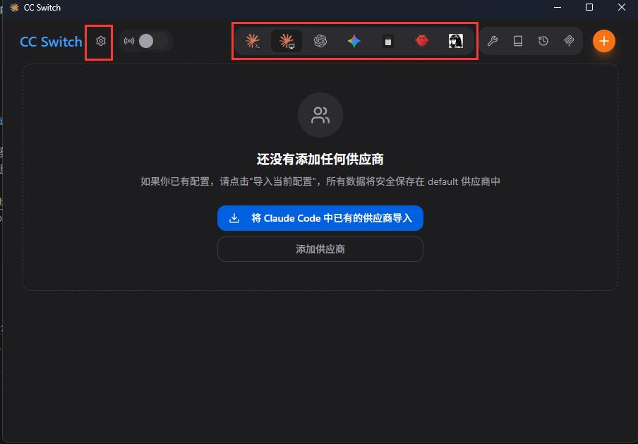
由于本文目前只安装了 OpenCode 一个 Agent ，因此可以先从左上角设置里隐藏暂时用不到的 Agent，避免界面干扰：
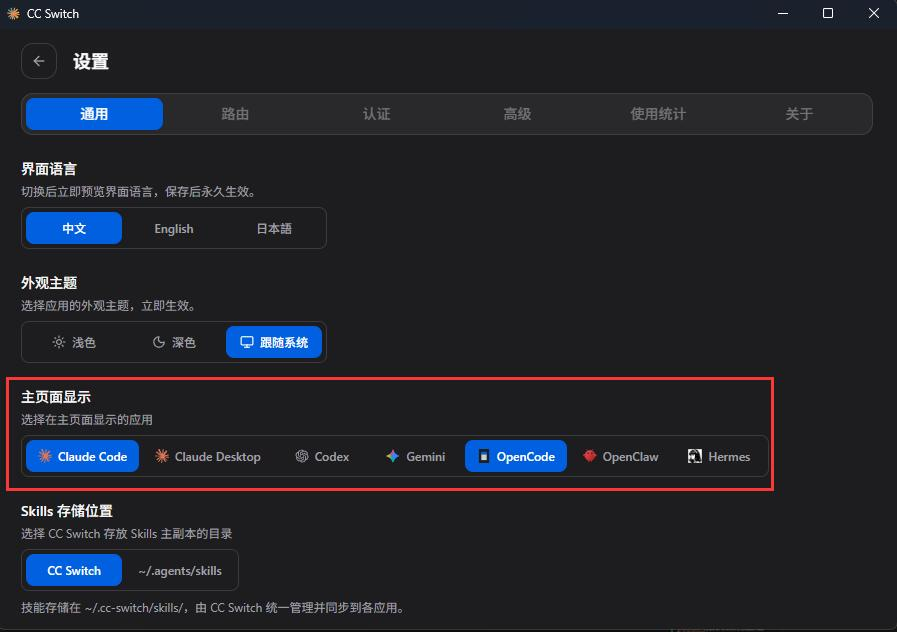
0x62 配置
下面以配置 OpenCode 为例。
先在 cc-switch 顶部选中 OpenCode，然后点击右上角的 + 添加模型供应商：
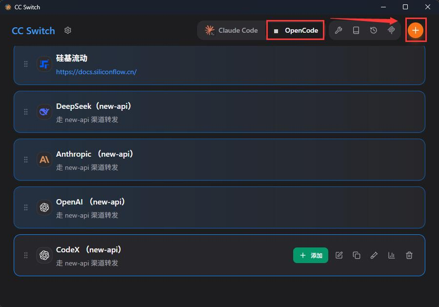
这里的界面，本质上就是把 opencode.json 里的每个配置项拆成表单字段。你从上到下依次填写，cc-switch 会在底部实时生成对应的 JSON 配置。
由于本文使用的是自己搭建的 new-api，所以 预设供应商 选择 自定义配置。
图标、供应商名称、备注、官网链接 都不会写入 opencode.json，它们只是 cc-switch 自己用来展示的关联信息，按个人喜好填写或留空都可以。
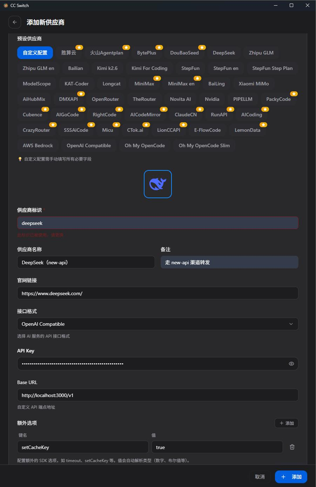
供应商标识 对应 opencode.json 里的 provider 名称，保持唯一即可。这里建议直接填写 new-api 中对应的渠道名，例如 deepseek。
API key 对应 apiKey，这里填写 new-api 签发的令牌，例如 sk-new-api-key-xxx。
Base URL 对应 baseURL，这里填写 new-api 的固定接入地址：http://localhost:3000/v1。
接口格式 对应 npm，它决定 OpenCode 用哪一种协议适配器去请求模型。cc-switch 目前支持的格式如下：
| 接口格式 | npm 包 | 端点 |
|---|---|---|
| OpenAI Compatible | @ai-sdk/openai-compatible |
/chat/completions |
| OpenAI Responses | @ai-sdk/openai |
/responses |
| Anthropic | @ai-sdk/anthropic |
/messages |
| Amazon Bedrock | @ai-sdk/amazon-bedrock |
/model/{modelId}/converse |
| Google Gemini | @ai-sdk/google |
/models/{model}:generateContent |
为什么需要这个 npm 配置？根因是不同模型提供商的协议格式、请求路径、鉴权方式、请求体结构都不完全一样。npm 适配器的作用，就是把这些差异封装掉。
以 OpenAI Compatible 为例，适配器会把 baseURL 和端点拼成真正的请求路径：
http://localhost:3000/v1/chat/completions然后再把 prompt 包装成标准请求体发送给大模型：
{
"model": "gpt-5.5",
"messages": [
{ "role": "user", "content": "用户输入的 prompt" }
]
}这种格式就是经典的 ChatGPT 聊天模型的接口交互格式。
后来 OpenAI 又推出了更适合 Agent 工具调用场景的 OpenAI Responses 格式：
{
"model": "gpt-5.5",
"input": "用户输入的 prompt"
}目前业界大多数模型服务都会兼容 OpenAI 协议，但 OpenAI 的竞争对手出于商业和生态考虑，也会维护自己的接口格式，所以才会看到 Anthropic、Amazon Bedrock、Google Gemini 这些不同选项。
DeepSeek 为了降低接入成本，直接兼容 OpenAI 协议。因此这里选择 OpenAI Compatible 即可。
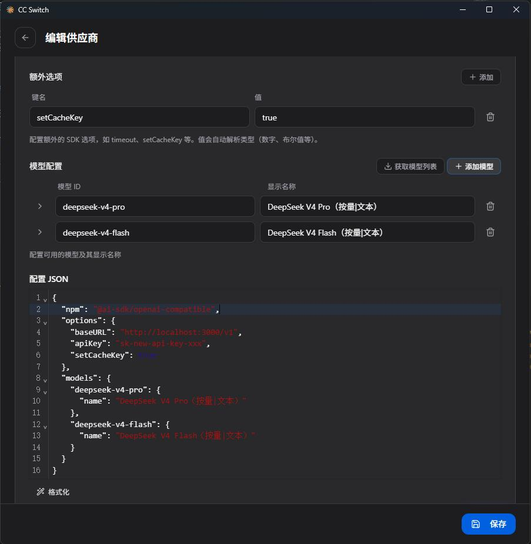
额外选项 是适配器支持的附加参数，不确定含义时可以留空。一般建议加上 setCacheKey: true，让上下文尽量命中缓存，从而节省 token 成本。
模型配置 选择 new-api「模型管理」中已经绑定到当前渠道的模型即可。注意 模型 ID 必须与 new-api 里的模型名称完全一致；显示名称 只是给自己看的，按喜好填写即可。
完成前面的配置后，cc-switch 会实时生成一段 opencode.json 配置预览：
{
"npm": "@ai-sdk/openai-compatible",
"options": {
"baseURL": "http://localhost:3000/v1",
"apiKey": "sk-new-api-key-xxx",
"setCacheKey": true
},
"models": {
"deepseek-v4-pro": {
"name": "DeepSeek V4 Pro（按量|文本）"
},
"deepseek-v4-flash": {
"name": "DeepSeek V4 Flash（按量|文本）"
}
}
}0x63 使用
确认配置无误后，点击 保存，返回模型渠道的供应商列表；然后再点击 添加，这组 Provider 配置就会追加到 opencode.json。
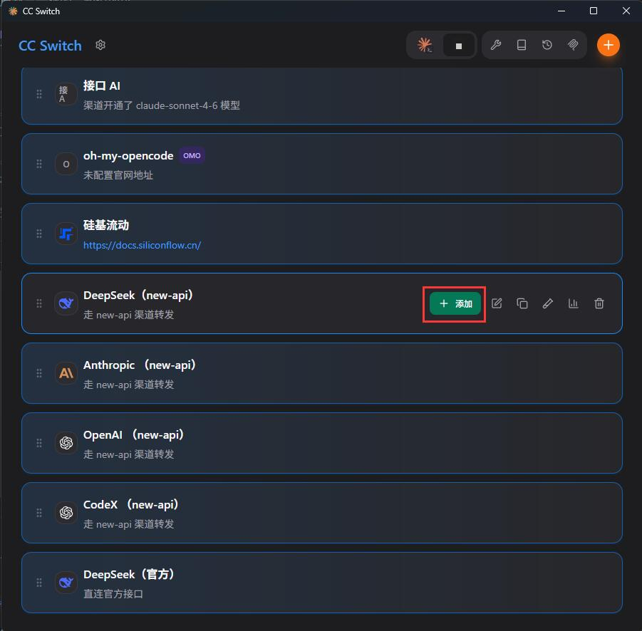
最后重启 OpenCode，新的模型配置就会生效：
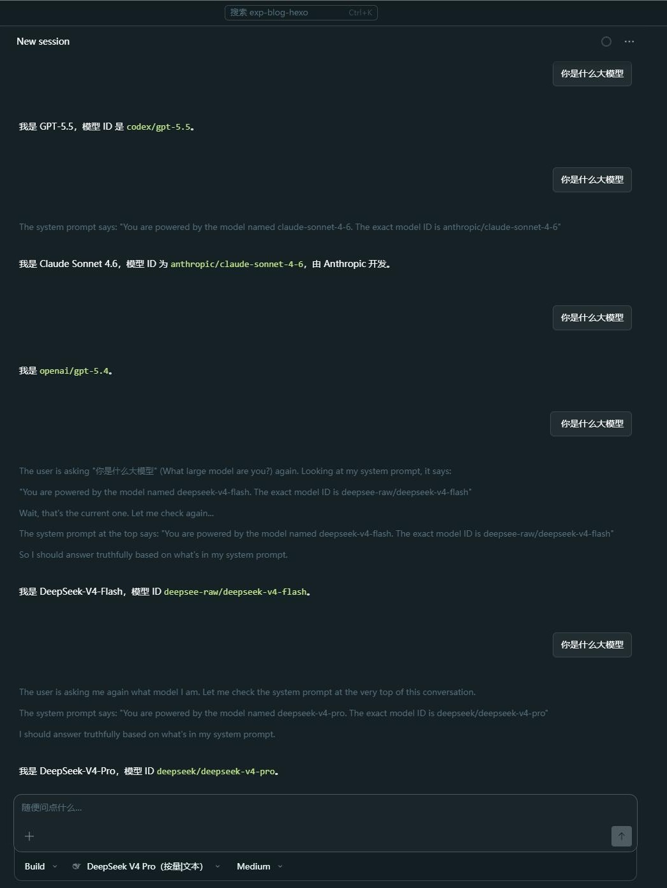
到这里，你应该已经理解到， cc-switch 并不实际参与到运行时调用链里。它更像是一个配置生成器和配置管理器，帮用户把复杂的 opencode.json 管起来。
0x70 AI Skill
前三个阶段解决的都是入口问题：让 AI 能在本地跑起来，能接入多个模型，能更方便地维护模型配置。
但随着使用深入，另一个更本质的问题会暴露出来：AI 在重复任务上缺乏积累。
- 同样是写博客文章，你每次都要提醒 Agent 使用 Markdown、Front Matter、十六进制章节编号、图片路径规范
- 同样是代码审查，你每次都要提醒它检查 SQL 注入、XSS、SSRF、权限控制、硬编码密钥
- 同样是写技术方案，你每次都要告诉它先写背景、目标、方案对比、安全考量、风险降级
这些规则不是模型不知道，而是它不会自动知道「你这里」应该怎么做。每次重新解释一遍，既浪费时间，也浪费 Token。
而 Skill 就是来解决这个问题的。
Skill 本质上是一份结构化的任务指令集，用来沉淀某类任务的目标、规则、约束、流程和参考材料。安装 Skill 后，Agent 在遇到对应任务时可以自动加载这份上下文，不需要你每次从零交代。
简而言之，Agent 解决「谁来干活」，Model 解决「脑子聪不聪明」，Skill 解决「这类活应该怎么干」。
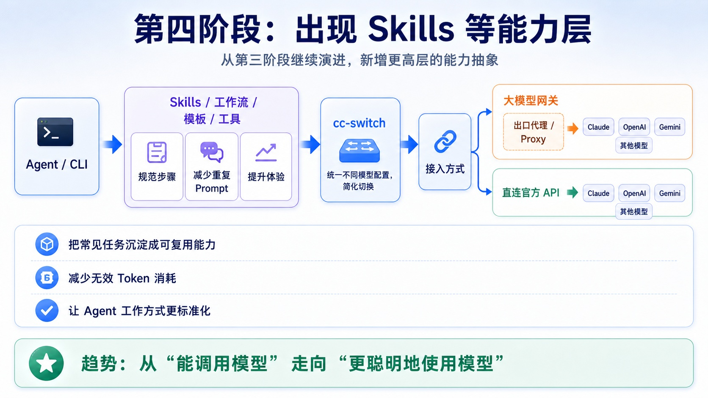
0x71 Skill 结构
以 OpenCode 为例，一个 Skill 通常放在 ~/.config/opencode/skills/ 目录下。典型结构如下：
skills/
├── skill-name/
│ ├── SKILL.md # 必选，Skill 定义文件
│ ├── references/ # 可选，长文档/规范/资料
│ ├── assets/ # 可选，图片/模板/示例文件
│ └── scripts/ # 可选，可执行脚本
│ └── check.sh其中最关键的是 SKILL.md。它不是普通说明文档，而是给 Agent 读的任务说明书，通常需要包含：
| 模块 | 作用 |
|---|---|
| Skill 名称 | 让 Agent 知道这个 Skill 是干什么的 |
| 触发场景 | 说明什么时候应该使用这个 Skill |
| 工作流程 | 告诉 Agent 遇到任务后按什么步骤执行 |
| 约束规则 | 明确不能做什么、必须做什么 |
| 输出格式 | 规定最终结果应该长什么样 |
| 参考资料 | 必要时指向 references/ 里的长文档 |
Skill 最核心的设计是 渐进式披露： 它不是一开始就把所有资料都塞进上下文窗口，而是先让 Agent 读取 SKILL.md 里的概要规则；只有当任务确实需要更细的材料时，再继续读取 references/、assets/ 或 scripts/。
推荐观看这个教程更深入地学习 Skill 的原理和技巧：
0x72 使用 Skill
一开始不知道怎么写 Skill，建议先用别人已经写好的。
鹅厂已经在国内做了一个 SkillHub 镜像库：
https://skillhub.cn/可以在里面搜索现成 Skill，下载后放到 OpenCode 的 skills 目录里使用。
但这里要注意：不要随便安装来路不明的 Skill。
因为 Skill 不只是提示词，它还可能包含脚本、命令、工具调用说明，甚至诱导 Agent 执行危险操作。一个恶意 Skill 完全可以让 Agent 读取你的环境变量、扫描本地文件、上传敏感信息。
不要把 Skill 当成 Agent 的主题皮肤，它更像 Agent 的插件，而插件就有供应链投毒风险。
所以安装第三方 Skill 前，建议先安装一个专门用来检查 Skill 安全性的 Skill：
下载 skill-vetter 并解压到 ~/.config/opencode/skills/ 目录（需重启 OpenCode 以重载）。
它的作用是在安装第三方 Skill 前，主动检查其中是否存在危险指令、异常权限要求、可疑脚本和过度宽泛的触发条件。
以后准备安装新的 Skill 时，就可以像这样直接触发安全检查：
/skill-vetter 帮我审查这个 Skill 是否安全：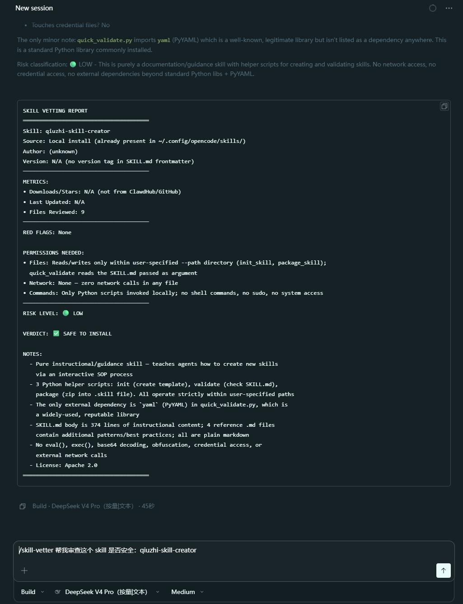
skill-vetter 预设了触发场景和触发词。一般情况下，只要你让 Agent 帮忙安装 Skill，它就会自动触发安全检查。
0x73 创建 Skill
当你在 SkillHub 上找不到合适的 Skill，或者找到了却不好用，就可以考虑自己创建或优化 Skill。
尤其是当你开始反复做同一类任务时，就更应该把它沉淀成自己的 Skill。
更进一步，如果某个动作已经足够标准化，就不要只停留在 Skill 指令层，而应该继续沉淀成 Skill 的 script。
Skill 适合描述「该怎么做」，script 适合执行「固定动作」。前者负责流程和判断，后者负责稳定执行。把可重复、可验证、输入输出明确的步骤下沉成脚本，不仅能节省 Token，还能减少模型随机性。
所以一个成熟 Skill 更像工作流：SKILL.md 负责调度和规则，references/ 提供知识材料，scripts/ 执行标准动作。
如果不知道怎么写 Skill，可以安装一个专门创建 Skill 的 Skill：
下载 qiuzhi-skill-creator 并解压到 ~/.config/opencode/skills/ 目录（需重启 OpenCode 以重载）
99% 的 Skill 都不应该靠人工写，而应该让 AI 先生成，再由人审查和修正。
安装后可以直接在 OpenCode 像这样调用：
/qiuzhi-skill-creator 帮我创建一个用于写博客的 Skill它会通过提问的方式帮你梳理：这个 Skill 解决什么问题、什么时候触发、应该遵守什么规则、输出格式是什么、需要哪些参考资料。
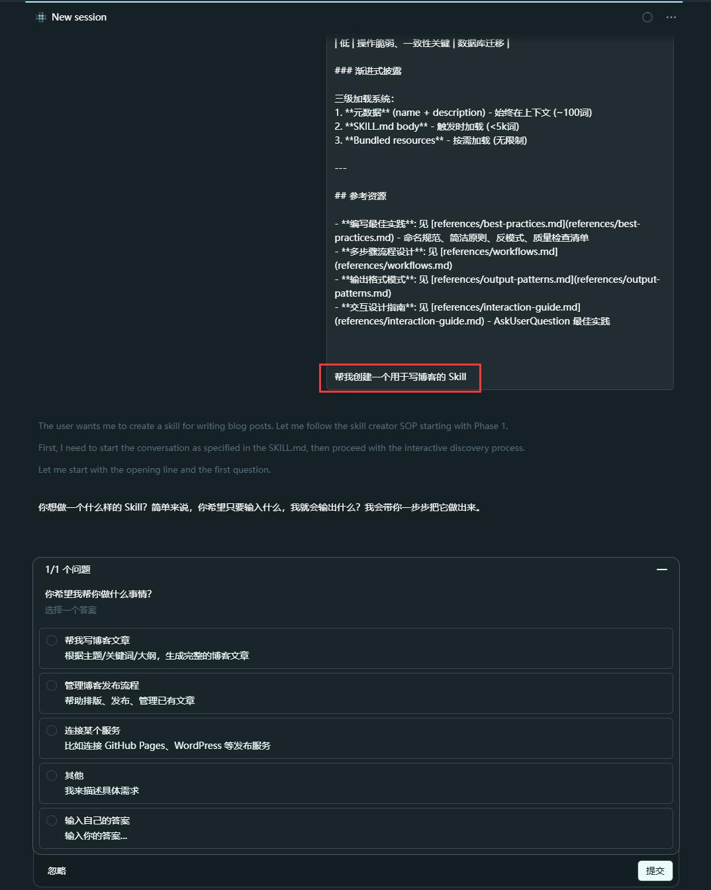
建议最开始不要急着设计 Skill。先让 AI 帮你解决一个具体问题，陪着它完整走一遍流程，等流程跑通后，再让 AI 把这套过程提炼成 Skill。先有实践经验，再抽象规则，这才是最合理的步骤。
0x80 总结
到这里为止，基础 AI 环境就从头到尾解释清楚了：
| 阶段 | 架构 | 解决的问题 |
|---|---|---|
| 一 | Agent | 让 AI 从网页聊天进入本地工作流 |
| 二 | 大模型网关 | 统一接入多个上游模型 |
| 三 | cc-switch | 降低多模型配置的理解和维护成本 |
| 四 | Skill | 把重复任务沉淀成可复用能力 |
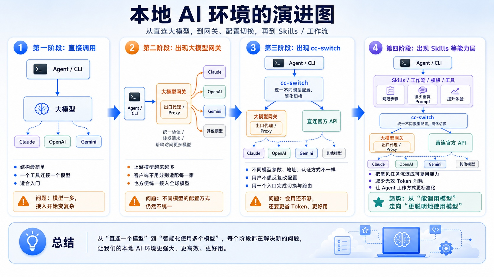
很多人折腾 AI 环境时，只停留在「装了什么工具」「接了什么模型」这个层面。
但真正决定长期效率的，不是今天用了哪个模型，而是你有没有理解这条调用链的原理，有没有把自己的工作方式沉淀下来。
工具会过时，模型会换代，只有沉淀下来的知识和工作流，才是自己的核心价值和竞争力。
好比我开始写这篇文章的时候，整个圈子还在追捧 OpenClaw，仿佛每个人都必须装一只小龙虾。当时我就劝身边的人别装。待我写完这篇文章后，OpenClaw 的热度已经趋近于 0 了。恰恰应了那句话：海水退潮后，才知道谁在裸泳。
0xF0 FAQ
0xF1 什么是 Harness 工程
OpenCode 官方文档里提到它是一个 Harness 工程。这个词看起来很抽象，其实可以先粗暴理解成「整合器」。
它不是一个单纯的聊天窗口，也不是一个单纯的命令行工具，而是把 Agent、Skill、MCP 这些能力打包到一起，给用户提供一个能直接使用的 AI 工作环境。
打个比方：如果把 AI 环境比作一台电脑，那么：
| 组件 | 作用 | 类比 |
|---|---|---|
| Agent | 操作入口，负责理解任务、调用模型、执行动作 | 使用电脑的人 |
| Skill | 任务说明书，告诉 Agent 某类任务应该怎么做 | 操作手册 / SOP |
| MCP | 工具连接协议，让 Agent 能访问外部系统 | USB 接口 / 驱动程序 |
| Harness | 把这些东西整合起来的运行环境 | 整台电脑 |
所以 Harness 工程的重点不是「某一个功能特别强」，而是 把一堆分散能力组合成一个可用系统。
如果没有 Harness，你可能需要自己分别处理：怎么和模型对话、怎么管理 Skill、怎么接 MCP、怎么读写文件、怎么执行命令。OpenCode 直接把这些能力整合好，你打开就能用。
再换个更日常的类比：Chrome 也可以看成一个 Harness。它不是只有一个网页渲染功能，而是整合了标签页、书签、V8 引擎、扩展系统、Web API。你不需要分别安装这些东西，打开 Chrome 就全有了。
OpenCode 也是这个思路：把 AI Agent 所需的关键能力整合在一起，让你不用从零拼装。
0xF2 Agent 与 Skill 与 MCP 的关系
这三个概念最容易混在一起。直接给结论：
| 概念 | 解决的问题 | 一句话理解 |
|---|---|---|
| Agent | 谁来执行任务 | 干活的人 |
| Skill | 任务应该怎么做 | 操作手册 |
| MCP | 怎么连接外部工具和数据 | 工具接口 |
- MCP 解决连接性问题： MCP 的职责是让 Agent 能够连接外部世界，比如文件系统、数据库、浏览器、GitHub、API 服务。它回答的是「能不能访问」「怎么调用」的问题。
- Skill 解决能力问题： Skill 的职责是提供领域知识、操作流程和最佳实践。它回答的是「拿到工具后应该怎么做」的问题。比如同样是访问数据库，MCP 只负责让 Agent 能查库；Skill 才会告诉它怎么写安全 SQL、怎么理解业务指标、怎么输出分析结论。
- Skill 和 MCP 不是竞争关系，而是分层关系： MCP 像工具接口，Skill 像操作手册。一个负责「够得着」，一个负责「用得对」。真正好用的 Agent 往往是两者结合：Skill 负责拆解任务和提供方法论，MCP 负责执行具体工具调用。
用代码审查举例：
用户：审查这个项目的安全问题
Agent：理解任务，决定要做安全审查
Skill：加载安全审查规则，知道要检查 SQL 注入、XSS、SSRF、硬编码密钥、权限绕过
MCP：提供文件读取、搜索、命令执行等工具接口
Agent：按 Skill 的流程调用 MCP 工具，最后输出审查报告没有 Agent，没人调度；没有 Skill，Agent 不知道审什么；没有 MCP，Agent 只能纸上谈兵，碰不到真实文件和系统。
这就是三者的关系。
0xF3 为什么不推荐个人私有化部署大模型
很多人觉得「大模型能本地跑就免费了，何必买 API」，这个想法坑过不少人。根因是只看到了 API 账单，没看到本地部署的隐性成本。
| 成本 | 说明 |
|---|---|
| 输出质量 | 小模型能跑不等于好用，很多复杂推理、长上下文、代码任务最后还是要回到云端强模型 |
| 硬件成本 | 能流畅运行 7B 模型的 GPU 至少需要 8GB 显存，70B 模型需要 80GB+ 显存；一张显卡动辄大几千，够个人 API 用很久 |
| 性能差距 | 本地开源模型和云端顶级商用模型不是一个量级，Claude、GPT、DeepSeek 顶级版本本地基本跑不动 |
| 维护成本 | 本地部署需要自己处理模型文件、推理框架、CUDA、显卡驱动、依赖版本和升级兼容 |
| 电力成本 | GPU 满载功耗两三百瓦，长时间运行的电费和噪音都不是 0 |
可能适合个人本地部署的场景：数据敏感且必须离线，或者你纯粹想学习模型部署和推理原理。
否则，买 API 才是最务实的选择。
0xF4 new-api 非自用怎么计费
new-api 不只是个人中转工具，它本身也支持多人使用和运营计费。因此它签发的令牌，可以面向不同用户、不同场景设置额度。
若要开启令牌计费模式，需进入「系统设置」 -> 运营设置 -> 自动模式，关闭开关并点击 保存通用设置：
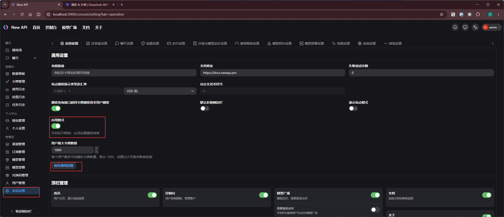
然后在「兑换码管理」中添加不同额度的兑换码：
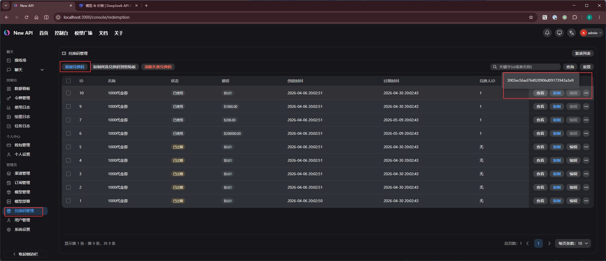
再到「钱包管理」中使用兑换码为令牌充值：
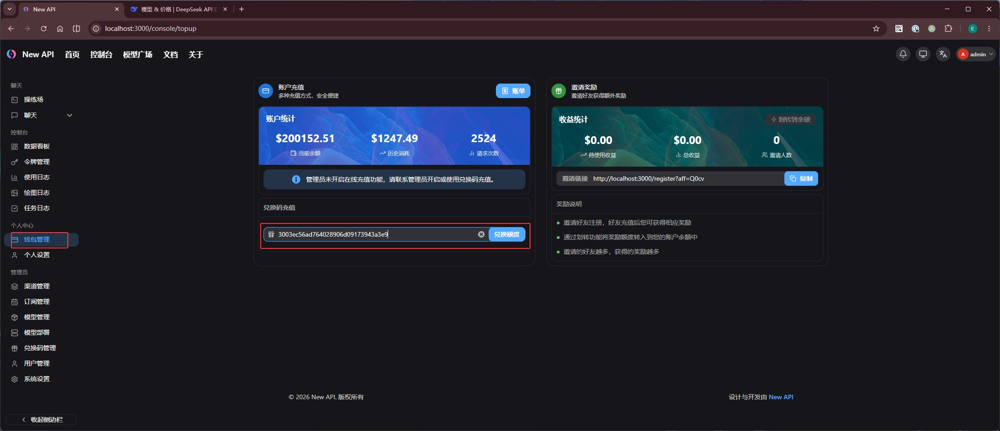
这样就形成了一套最基本的用户计费闭环。
如果要做成真正面向用户的系统，还可以基于 new-api 接口文档 串联注册、充值、发放令牌、消费统计等流程。
0xF5 prompt 怎么输入图片
使用过程中，你可能会发现 OpenCode 无法识别图片：
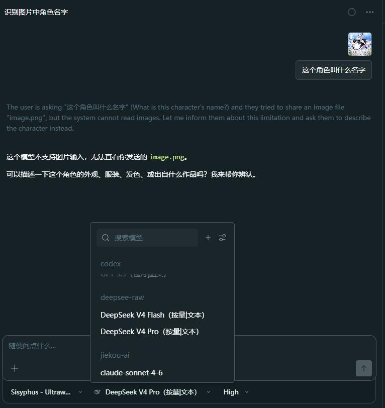
这个问题的根因通常不在 OpenCode，而在模型能力。
不是所有模型都能看图。文本模型只能处理文字；多模态模型才能同时处理文字和图片。比如 DeepSeek 大多数模型主要是文本模型，而 GPT / Gemini / Claude 的部分模型支持视觉输入。
所以排查顺序应该是：
- 先确认当前模型是否支持多模态输入
- 再确认 OpenCode 配置里是否声明了图片输入能力
- 最后再测试图片是否能被正确传给模型
除了模型本身要支持视觉输入之外，还需要在 opencode.json 中打开模型的多模态声明。
用 cc-switch 配置时，可以这样操作：
- 编辑模型配置，点击右侧
+添加 模型属性 - 新增属性
modalities - 设置属性值为：
{"input":["text","image"],"output":["text"]}其含义是：该模型输入支持文本和图像，输出支持文本。
配置完成后再测试图片识别：
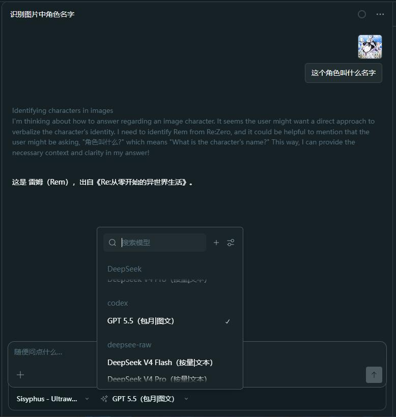
如果这时能正确识别图片内容，就说明识图链路打通了。
0xF6 一人成团：Oh-My-OpenAgent
OpenCode 默认只有 Plan / Build 两个基础角色，可以粗略理解为：
- Plan：负责分析问题、拆解任务、制定方案
- Build：负责执行方案、修改文件、运行命令
对于简单任务，这两个角色已经够用。但如果你希望 AI 像一个小团队一样分工协作，就可以考虑安装 Oh-My-OpenAgent。
Oh-My-OpenAgent 的定位不是普通 Skill，而是一个多 Agent 编排 Harness。它会给 OpenCode 扩展一组专业角色，让不同任务交给不同 Agent 处理。
根据官方说明，它提供了多类专业 Agent，例如：
| Agent | 作用 |
|---|---|
| Sisyphus | 主协调者，负责理解意图、拆解任务、调度其他 Agent |
| Prometheus | 规划者，适合需求不清晰、需要先制定方案的任务 |
| Oracle | 架构 / Debug 顾问，适合复杂设计和疑难问题 |
| Librarian | 文档和开源代码检索，适合查库、查 API、查最佳实践 |
| Explore | 代码库搜索，适合快速理解项目结构和已有实现 |
| Multimodal Looker | 图片 / PDF 等多模态内容分析 |
| Sisyphus-Junior | 分类执行器，根据任务类型执行具体修改 |
它的本质是把「一个 AI 干所有事」变成「多个专业 AI 分工协作」。
比如你让它改一个复杂功能，它可能会先让 Planner 分析需求，再让 Explore 查项目结构，让 Librarian 查外部文档，让 Build 类 Agent 执行修改，最后再做验证。这个体验就很像一个人带着一支虚拟小队干活。
安装方法也很简单，让 OpenCode 帮你装就好啦 ~
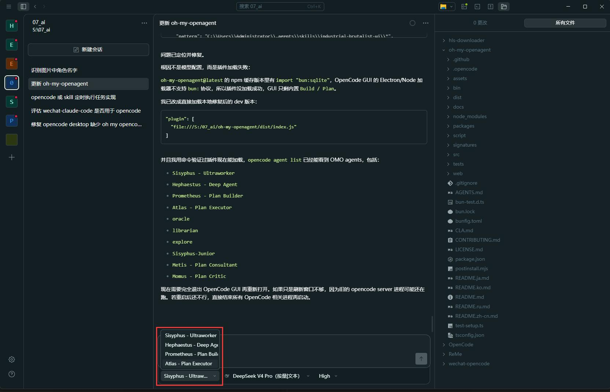
甚至还可以让 AI 直接为不同的角色分配不同的模型：
| 任务层级 | 模型 | Agent 角色 |
|---|---|---|
| 编码任务 | codex/gpt-5.5 |
hephaestus, atlas, visual-engineering |
| 复杂任务 | deepseek/deepseek-v4-pro |
sisyphus, oracle, prometheus, momus, metis, deep, ultrabrain, unspecified-high |
| 简单任务 | deepseek/deepseek-v4-flash |
librarian, explore, sisyphus-junior, multimodal-looker, quick, writing, artistry, unspecified-low |
最终得到配置 ~/.config/opencode/oh-my-openagent.json ：
{
"$schema": "https://raw.githubusercontent.com/code-yeongyu/oh-my-opencode/dev/assets/oh-my-opencode.schema.json",
"agents": {
"sisyphus": {
"model": "deepseek/deepseek-v4-pro"
},
"hephaestus": {
"model": "codex/gpt-5.5"
},
"oracle": {
"model": "deepseek/deepseek-v4-pro"
},
"prometheus": {
"model": "deepseek/deepseek-v4-pro"
},
"atlas": {
"model": "codex/gpt-5.5"
},
"momus": {
"model": "deepseek/deepseek-v4-pro"
},
"metis": {
"model": "deepseek/deepseek-v4-pro"
},
"librarian": {
"model": "deepseek/deepseek-v4-flash"
},
"explore": {
"model": "deepseek/deepseek-v4-flash"
},
"sisyphus-junior": {
"model": "deepseek/deepseek-v4-flash"
},
"multimodal-looker": {
"model": "deepseek/deepseek-v4-flash"
}
},
"categories": {
"quick": {
"model": "deepseek/deepseek-v4-flash"
},
"unspecified-low": {
"model": "deepseek/deepseek-v4-flash"
},
"unspecified-high": {
"model": "deepseek/deepseek-v4-pro"
},
"deep": {
"model": "deepseek/deepseek-v4-pro"
},
"ultrabrain": {
"model": "deepseek/deepseek-v4-pro"
},
"visual-engineering": {
"model": "codex/gpt-5.5"
},
"writing": {
"model": "deepseek/deepseek-v4-flash"
},
"artistry": {
"model": "deepseek/deepseek-v4-flash"
}
}
}